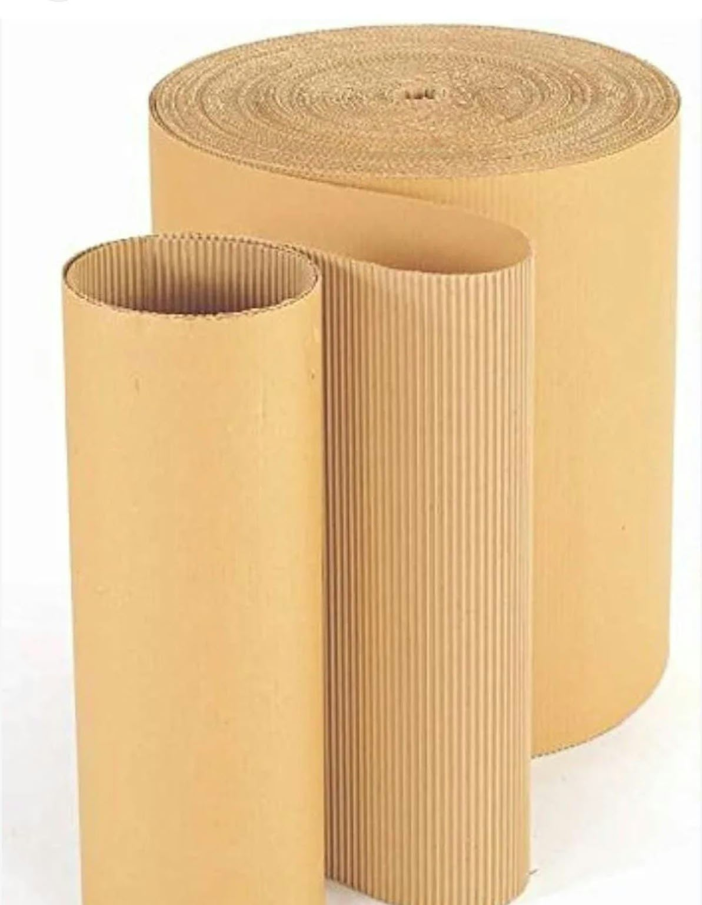

2 Ply Corrugated Roll Supplier in Bengaluru

Corrugated Rolls for Safe Packaging
Shinde Packaging Products supplies 2 ply corrugated rolls for wrapping, cushioning and protecting products during storage, handling and transportation.
Corrugated rolls are useful for packaging furniture, glass items, appliances and various industrial products. They provide a protective layer around goods during transit.
Applications of Corrugated Rolls
- Furniture and appliance packaging
- Wrapping fragile products
- Protecting goods during transportation
- Industrial and warehouse packaging
- Surface protection during shifting
Why Choose Shinde Packaging Products?
- Packaging material supplier in Bengaluru
- Bulk supply options
- Multiple packaging material options
- Enquiry and quotation assistance
Contact Us for Corrugated Rolls
Shinde Packaging Products
Bengaluru, Karnataka, India
Phone: +91 6361177533
Phone: +91 9449889992
Frequently Asked Questions About 2 Ply Corrugated Rolls
1. What is a 2 ply corrugated roll used for?
2 ply corrugated rolls are used for wrapping and protecting furniture, glass items, appliances and industrial products during storage, handling and transportation.
2. What is the benefit of using corrugated rolls?
Corrugated rolls provide a cushioning and protective layer that helps reduce scratches and minor damage during transit.
3. Where can I buy 2 ply corrugated rolls in Bengaluru?
Contact Shinde Packaging Products in Bengaluru for product enquiries, pricing and bulk orders.